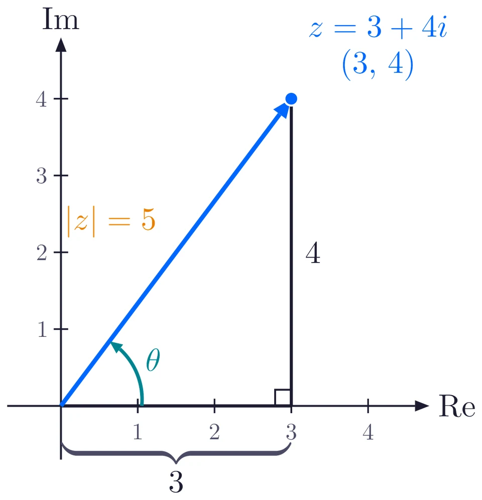
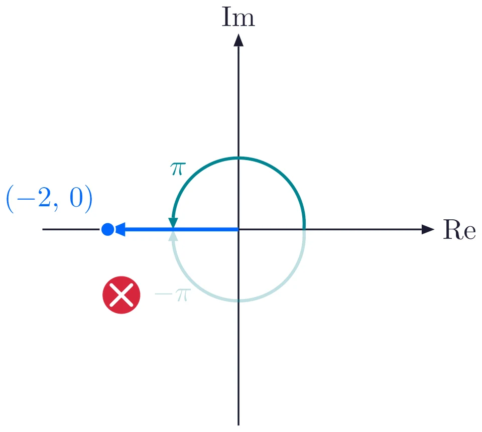
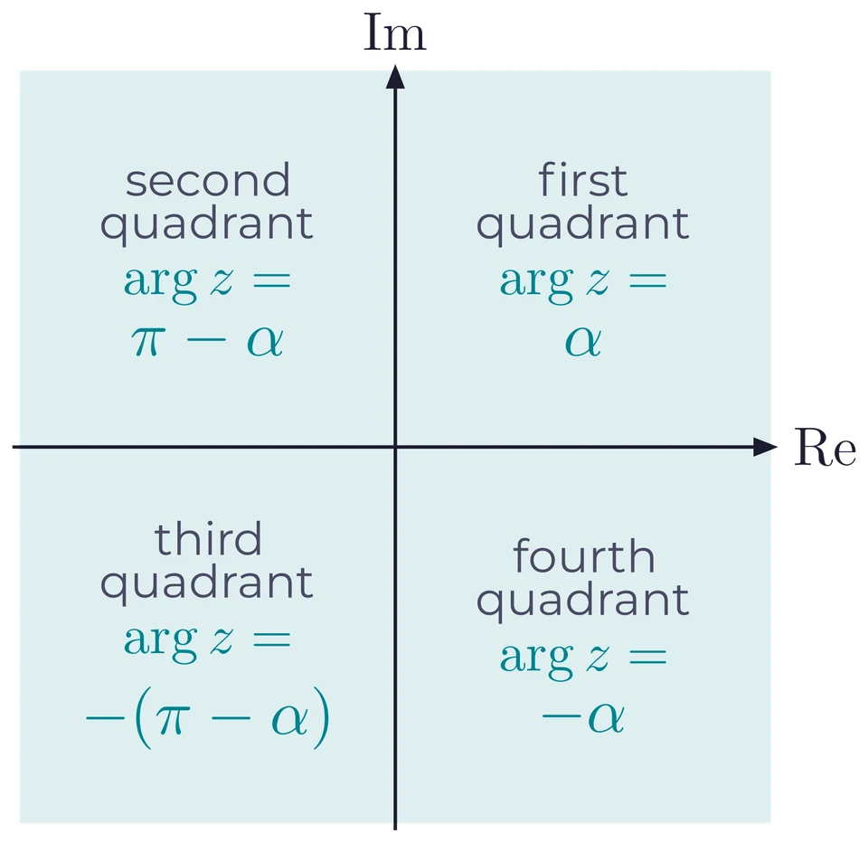
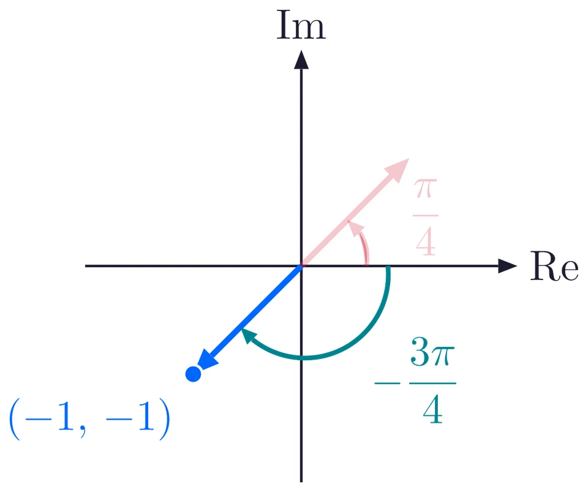

A complex number is a point and an arrow
The complex number \(z = x + iy\) is plotted as the point \((x, y)\) on the Argand plane: the real part \(x\) along the real axis and the imaginary part \(y\) along the imaginary axis. Join the origin to that point and you get an arrow. Two numbers describe the arrow completely: its length and its direction.

For \(z = 3 + 4i\) the arrow and the two sides \(3\) and \(4\) form a right triangle.
Modulus: how long the arrow is
By Pythagoras, the length of the arrow is
\[ |z| = \sqrt{x^2 + y^2}, \qquad |3 + 4i| = \sqrt{3^2 + 4^2} = \sqrt{25} = 5. \]
The modulus is a length, so it is never negative, and it is \(0\) only for \(z = 0\).
Argument: which way the arrow points
The argument \(\arg z\) is the angle from the positive real axis to the arrow. Anticlockwise turns count as positive and clockwise turns as negative. For \(3 + 4i\), \(\tan\theta = \dfrac{4}{3}\), so \(\theta = \tan^{-1}\left(\dfrac{4}{3}\right) \approx 0.9273\) radians, which is about \(53.13^\circ\).
The principal argument
The same arrow can be reached by turning anticlockwise or clockwise, and by adding full turns of \(2\pi\), so one arrow has many angles. We agree to report one of them, the principal argument, which lies in \((-\pi, \pi]\): from \(0\) up to \(\pi\) for an arrow above the real axis, and from \(0\) down to (but not reaching) \(-\pi\) for an arrow below it. The shorter turn wins.
On the negative real axis the two turns are equally long, \(\pi\) anticlockwise and \(\pi\) clockwise. The agreement settles the tie in favour of the anticlockwise turn, so \(\arg(-2) = \pi\), never \(-\pi\).

Finding the argument in any quadrant
Work in two steps. First find the acute angle the arrow makes with the real axis, \(\alpha = \tan^{-1}\left|\dfrac{y}{x}\right|\). Then read the argument from the quadrant the point is in.

Formulas to remember
\[ |z| = \sqrt{x^2 + y^2}, \qquad \alpha = \tan^{-1}\left|\frac{y}{x}\right| \]
| Quadrant | Argument |
|---|---|
| First | \(\arg z = \alpha\) |
| Second | \(\arg z = \pi - \alpha\) |
| Third | \(\arg z = -(\pi - \alpha)\) |
| Fourth | \(\arg z = -\alpha\) |
Polar form: \(z = r(\cos\theta + i\sin\theta)\), with \(r = |z|\) and \(\theta = \arg z\).
For the four arrows \(1 + i\), \(-1 + i\), \(-1 - i\) and \(1 - i\), the acute angle is \(\alpha = \dfrac{\pi}{4}\) every time, and the arguments are \(\dfrac{\pi}{4}\), \(\dfrac{3\pi}{4}\), \(-\dfrac{3\pi}{4}\) and \(-\dfrac{\pi}{4}\).
Careful: the calculator trap
For \(z = -1 - i\) a calculator gives \(\tan^{-1}\left(\dfrac{-1}{-1}\right) = \tan^{-1}(1) = \dfrac{\pi}{4}\). But an arrow at \(\dfrac{\pi}{4}\) points to \((1, 1)\) in the first quadrant, and \(-1 - i\) is the point \((-1, -1)\) in the third. Dividing \(y\) by \(x\) threw away both signs.
The true argument is \(-\left(\pi - \dfrac{\pi}{4}\right) = -\dfrac{3\pi}{4}\). Always check the quadrant.

Solved example
Find \(|z|\) and \(\arg z\) for \(z = -1 - \sqrt{3}\,i\).
Plot it. The point is \((-1, -\sqrt{3})\), in the third quadrant.
Modulus. \(|z| = \sqrt{(-1)^2 + (-\sqrt{3})^2} = \sqrt{1 + 3} = 2\).
Acute angle. \(\alpha = \tan^{-1}\left|\dfrac{-\sqrt{3}}{-1}\right| = \tan^{-1}\sqrt{3} = \dfrac{\pi}{3}\).
Argument. Third quadrant, so \(\arg z = -\left(\pi - \dfrac{\pi}{3}\right) = -\dfrac{2\pi}{3}\).
\(|z| = 2\), \(\arg z = -\dfrac{2\pi}{3}\)
Practice set
Easy to hard. Give every argument as the principal argument, in radians. Try each one before you open its answer.
Find \(|z|\) and \(\arg z\) for \(z = 1 + \sqrt{3}\,i\).
Show answer
\(|z| = 2\), \(\arg z = \dfrac{\pi}{3}\). \(|z| = \sqrt{1 + 3} = 2\). First quadrant, \(\alpha = \tan^{-1}\sqrt{3} = \dfrac{\pi}{3}\).
Find \(|z|\) and \(\arg z\) for \(z = -3\).
Show answer
\(|z| = 3\), \(\arg z = \pi\). The point \((-3, 0)\) is on the negative real axis. The argument is \(\pi\), not \(-\pi\).
Find \(|z|\) and \(\arg z\) for \(z = -2i\).
Show answer
\(|z| = 2\), \(\arg z = -\dfrac{\pi}{2}\). The point \((0, -2)\) is straight down the imaginary axis: a quarter turn clockwise.
Find \(|z|\) and \(\arg z\) for \(z = \sqrt{3} - i\).
Show answer
\(|z| = 2\), \(\arg z = -\dfrac{\pi}{6}\). \(|z| = \sqrt{3 + 1} = 2\). Fourth quadrant, \(\alpha = \tan^{-1}\dfrac{1}{\sqrt{3}} = \dfrac{\pi}{6}\), so \(\arg z = -\dfrac{\pi}{6}\).
Find \(|z|\) and \(\arg z\) for \(z = \dfrac{1 + i}{1 - i}\).
Show answer
\(|z| = 1\), \(\arg z = \dfrac{\pi}{2}\). Multiply top and bottom by \(1 + i\): \(\dfrac{(1 + i)^2}{(1 - i)(1 + i)} = \dfrac{2i}{2} = i\), the point \((0, 1)\).
Write \(z = -1 + \sqrt{3}\,i\) in polar form.
Show answer
\(z = 2\left(\cos\dfrac{2\pi}{3} + i\sin\dfrac{2\pi}{3}\right)\). \(r = \sqrt{1 + 3} = 2\). Second quadrant, \(\alpha = \dfrac{\pi}{3}\), so \(\theta = \pi - \dfrac{\pi}{3} = \dfrac{2\pi}{3}\).
Find \(|z|\) and \(\arg z\) for \(z = -4 - 4i\).
Show answer
\(|z| = 4\sqrt{2}\), \(\arg z = -\dfrac{3\pi}{4}\). \(|z| = \sqrt{16 + 16} = 4\sqrt{2}\). Third quadrant, \(\alpha = \dfrac{\pi}{4}\), so \(\arg z = -\dfrac{3\pi}{4}\), not \(\dfrac{\pi}{4}\).
Let \(z = -1 - i\). Find \(\arg(z^2)\). Is it equal to \(2\arg z\)?
Show answer
\(\arg(z^2) = \dfrac{\pi}{2}\), and no. \(z^2 = (-1 - i)^2 = 1 + 2i + i^2 = 2i\), so \(\arg(z^2) = \dfrac{\pi}{2}\). But \(2\arg z = 2\left(-\dfrac{3\pi}{4}\right) = -\dfrac{3\pi}{2}\), which lies outside \((-\pi, \pi]\). The two differ by a full turn of \(2\pi\): they are the same direction, but only \(\dfrac{\pi}{2}\) is the principal argument.